这几天期待已久的南美之行终于成行了。经历了14个小时的飞行，从三番起飞，巴拿马转机后，终于抵达了秘鲁的首都利马。
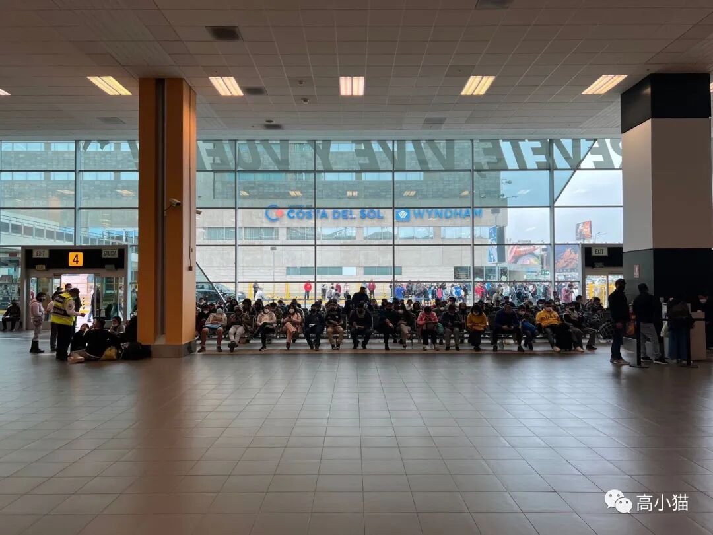
利马机场，小小的，乱乱的利马菜，烤牛心？
第一天在利马机场附近的酒店过了一夜后，第二天飞到了库斯科。
在库斯科踩了几个比较有名的点。
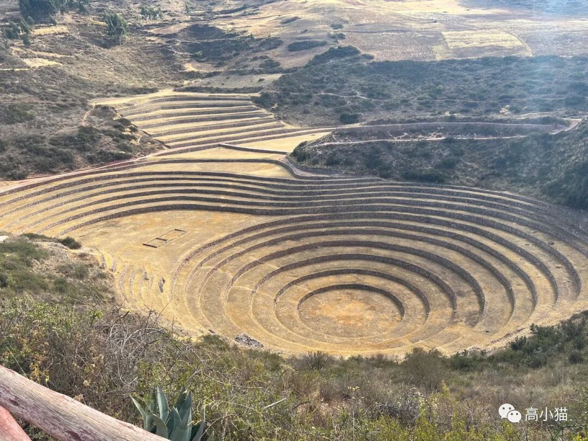
一个很大的梯田，印加人用来做庄稼培育地的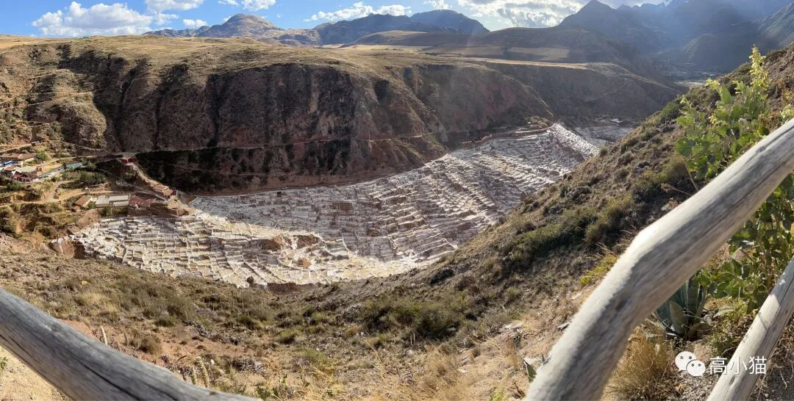
盐田，当地人用一口咸的温泉打出来的水晒的盐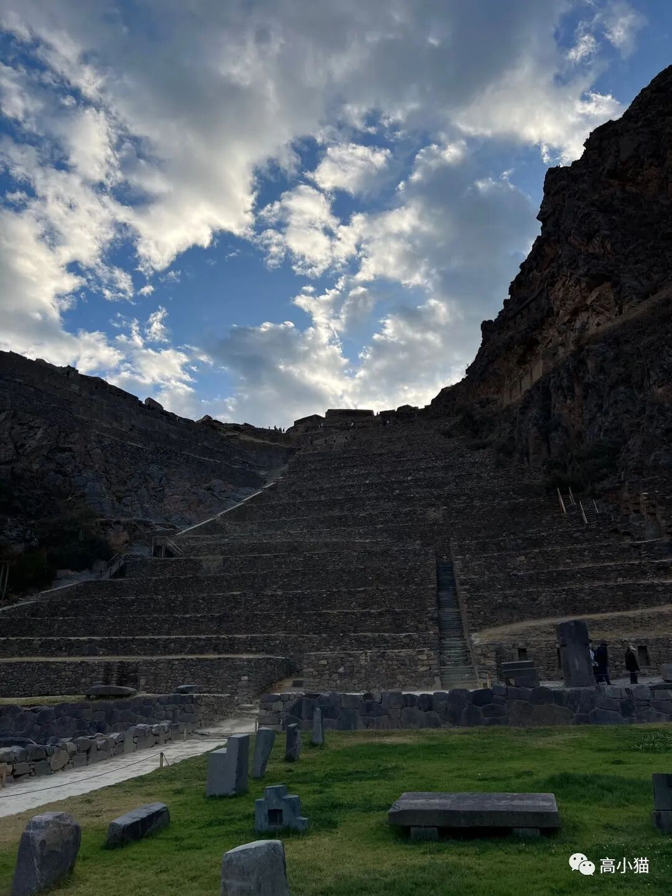
一个印加人的宗教场所当天晚上住在库斯科里的乌鲁班巴小镇。
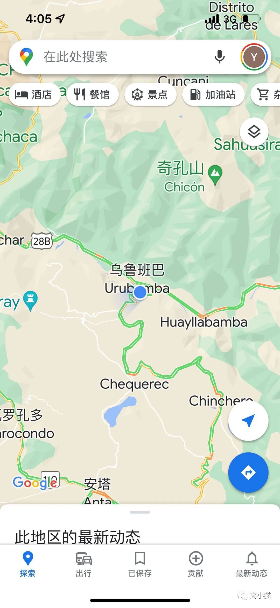
旅行社安排的酒店（貌似叫tambo）真的很棒～大厅很有氛围，泳池很漂亮，早上起来外面正对着山，挺好看的。当然我都没拍= =
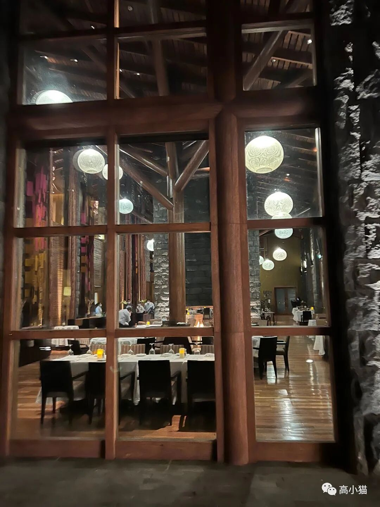
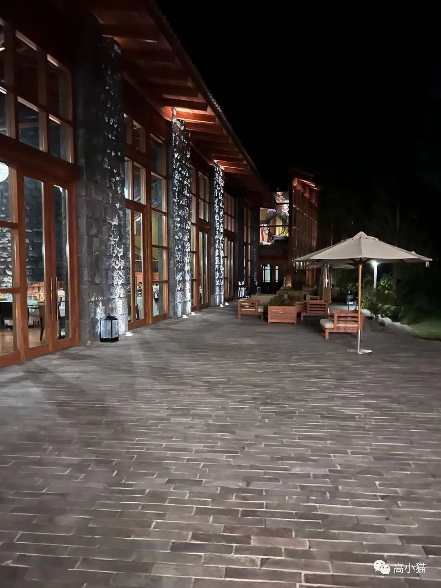
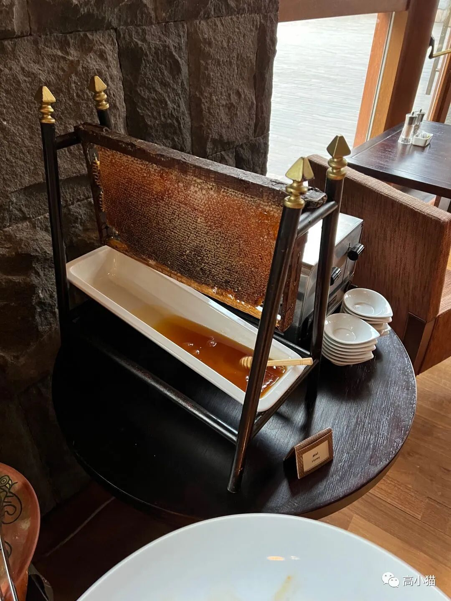
第三天（今天）去爬了印加古道里面的一段。早上旅行社派人把我们接到了欧燕台。这里一般是徒步去马丘比丘的起点。从这里走四天三夜就可以到马丘比丘，中间那条trail似乎是全球闻名的一条hiking trail。
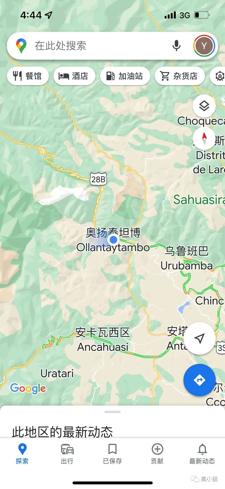
也叫欧燕台，感觉那个名字更好记不过走四天三夜还是有点太远了….旅行社建议我们坐火车到半途，走最后一段。
于是今天（第三天）就是去走最后的这一段trail。早上7点出发去火车站，9点到起点，一直走到了下午5:30。
全程8 miles真的很长（1.3万米），不仅如此它还是在高海拔地区，确实走起来挺累的….
不过还是挺美的。
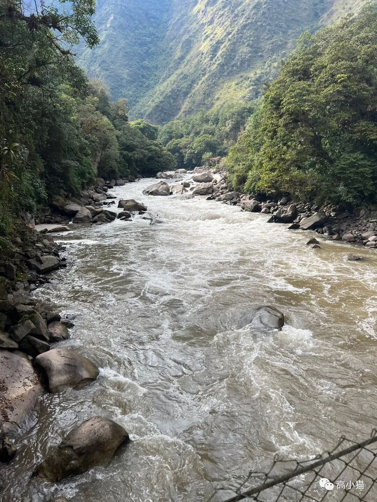
起点的桥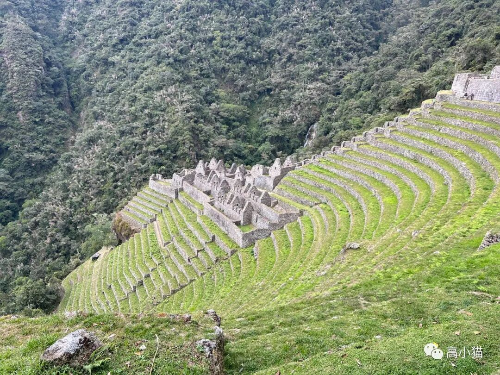
藏在山中的遗迹，只有走路才能到。这个遗迹在一开始的时候，只是山上小小的一些石头房子，近看的时候真的很震撼。印加人居然在山上造了这么大的东西，搬了这么多石头上来。
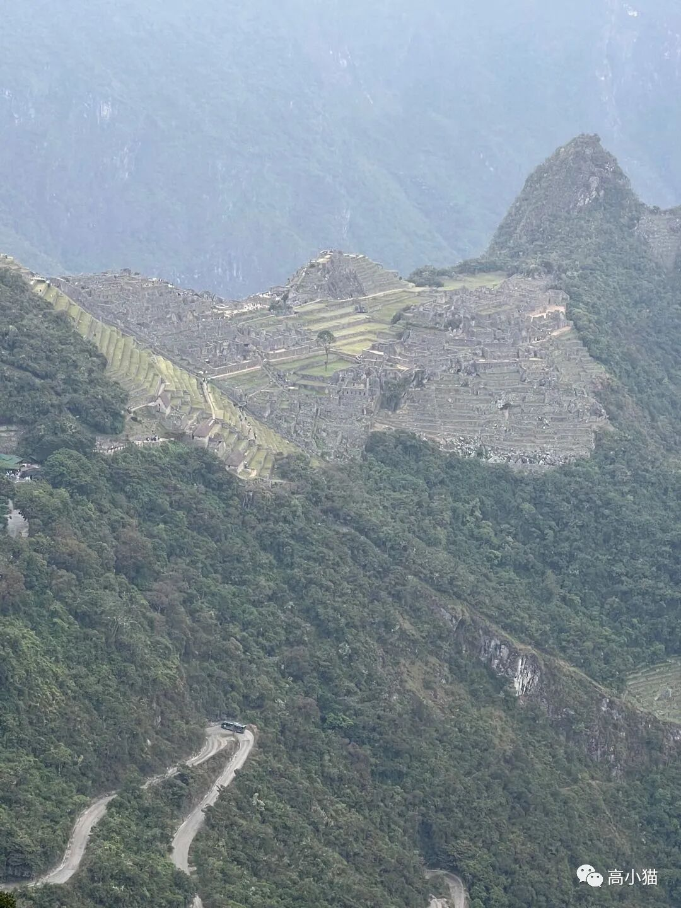
俯瞰马丘比丘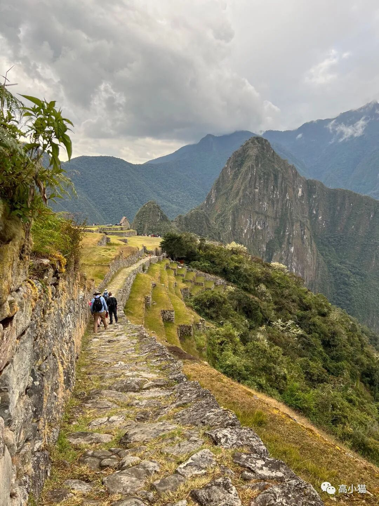
近看马丘比丘在终于走到马丘比丘后，我们就坐公交车去附近的小镇了。计划是第二天再来看。毕竟已经走得精疲力竭了。
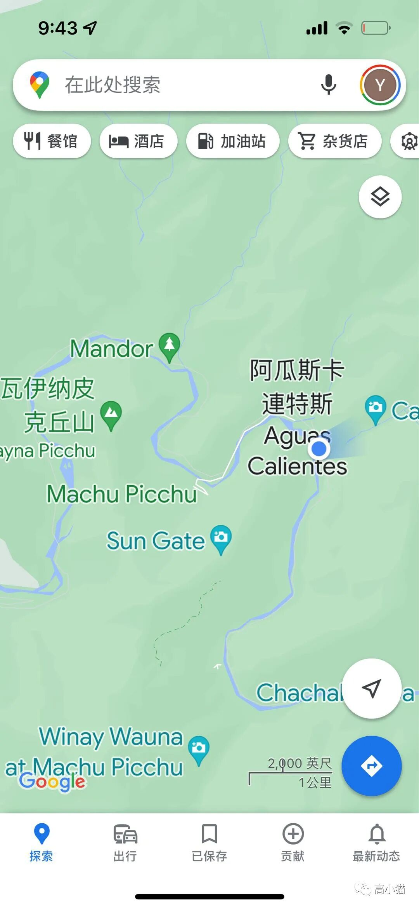
附近的小镇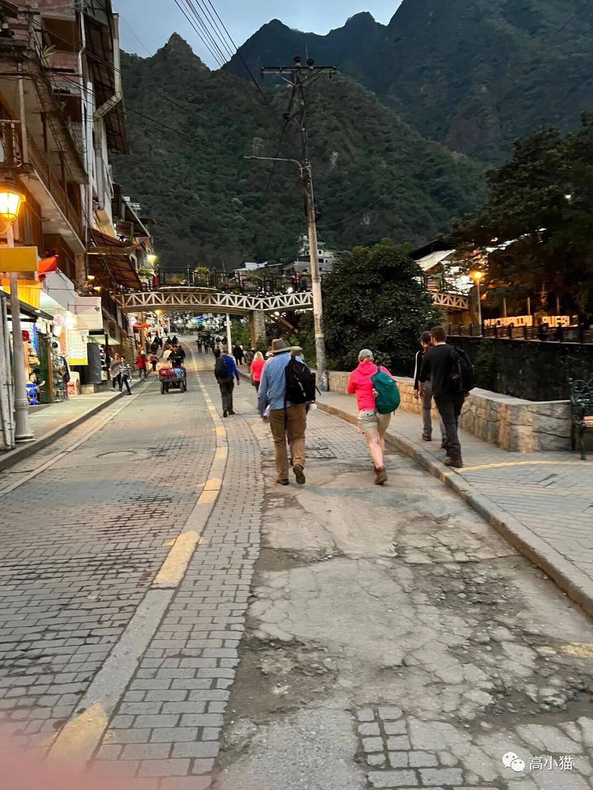
一个挺像丽江的旅游小镇今天入住了附近的宾馆，就这样结束啦～
今天只是想试试看，看看这种流水账游记会不会写起来有意思，也想给未来的自己一个记录。毕竟不然肯定是记不住的。
溜了